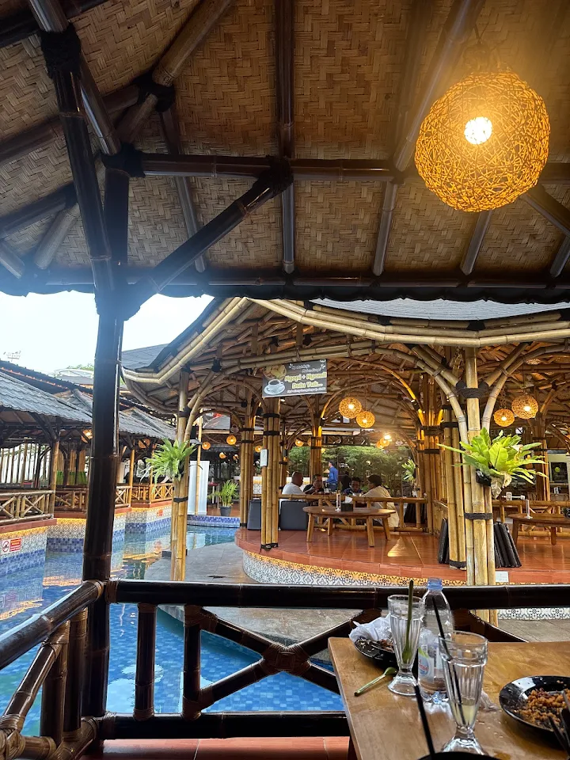
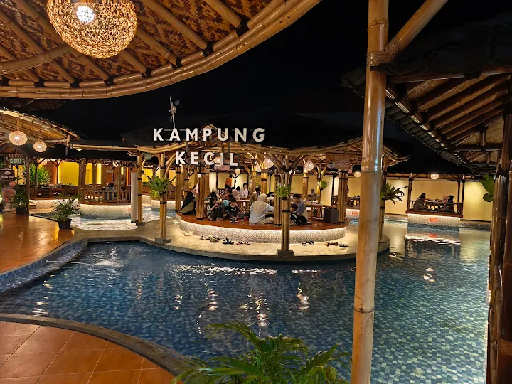

RESTO · KOLAM · SUASANA KAMPUNG
Ngobrol santai,
di tengah Kampung Kecil.
Duduk lesehan, dengar gemericik kolam, dan makan hangat di bawah atap bambu & lampu rattan — kayak lagi mampir ke rumah kampung sendiri.
BUKA
SETIAP HARI
SETIAP HARI
Dibangun dari bambu,
ditemani lampu rattan
& air yang mengalir.


Kampung Kecil dibangun sebagai tempat mampir buat siapa saja yang kangen suasana kampung — gazebo bambu, kolam kecil di tengah, dan lampu-lampu hangat yang menyala begitu matahari turun. Nggak perlu dandan rapi, cukup datang, duduk, dan biarkan waktu jalan pelan.
santai aja…Suasana yang bikin
betah berlama-lama.



✦ MAU DATANG?